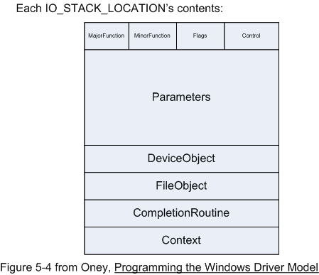
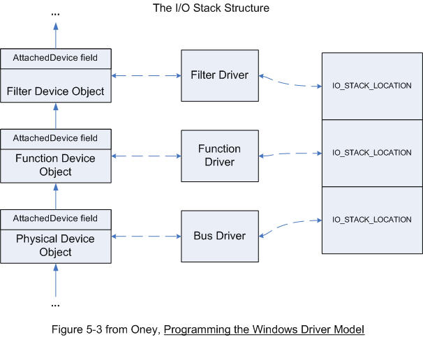
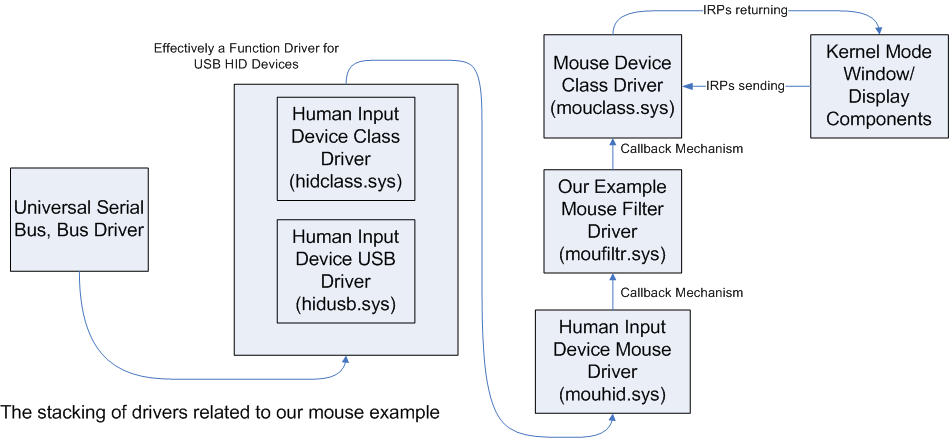

An IRP contains every possible relevant piece of information regarding an I/O request. Keep in mind that I/O request, in the sense of an IRP, may not be actually I/O, but may be a device command or query that some lower level driver (before the function driver itself) can answer. Most importantly, IRPs contain the following information: addresses of memory or buffers that contain information or must be filled with the results of an I/O operation, the device flags (from the Device Object before) which can specify things like buffered I/O, the main function of the IRP (major function codes), a minor function code (if applicable), a pointer to a routine that can cancel the IRP in mid-processing, a status code for the IRP, an indication if the irp is pending and cannot be handled by a higher level driver, and many other important fields that contain valuable information.
Kernel mode code creates IRPs as a result of internal kernel operations or on behalf of a user-mode component that requests I/O operations. Along with an IRP, an array of IO_STACK_LOCATIONS is also created, one entry per driver that will process the IRP, and each location contains some more information about the IRP as well as a completion routine. The array of IO stack locations is as vital to keep in mind as the IRP itself. The I/O stack locations each contain the following information: the IRP major function code, the minor function code, flags, a union of parameter substructures, a pointer to the device object, a pointer to a Kernel file object to which the I/O request is directed, a completion routine pointer, and an arbitrary context value to be passed to the completion routine.
While all the data structures inside an IRP and an array of IO stack locations may sound like a mouthful, pay attention to the functionality that this kind of system affords. Storing major function codes in each array location allows an IRP to morph from one type of I/O request to another as it travels down the stack. Pointers to buffers in an IRP allow the kernel to automatically handle the messy process of allocating and freeing non-paged system buffers for I/O for driver writers who are uncomfortable with this process. The Status and Cancel fields allow IRPs to be halted and expunged or suspended midway through the I/O system. These structures and fields have evolved over time to include all sorts of functionality as Microsoft's I/O subsystem requirements have grown and changed.
At this point, we must more fully limit our discussion to WDM filter drivers. IRPs for DMA, interrupt driven I/O, and specific classes of device vary in their behavior and processing so greatly that any driver writer attempting to write a driver for such devices will have to learn the very precise specifics of how XP handles the IRPs for her or his device. For our WDM filter drivers, the IRP major function codes that we will handle include IRP_MJ_CREATE and IRP_MJ_CLOSE, and IRP_MJ_INTERNAL_DEVICE_CONTROL.
For pointing devices that fit the USB specification, Microsoft provides a miniport and port driver combination for Human Input Devices (HID) that work as a function driver for HID devices. For mice, mouhid.sys and mouclass.sys also work together to become a function Mouhid and Mouclass work together to present a uniform HID mouse interface to the system, as defined by Microsoft. This enabled applications to transparently handle all kinds of mice that fit the specifications. Now, because a mouse an input device, a special direct-call interface (a callback function) is used to transfer information from whatever port driver to Mouclass.sys. This facilitates using the Microsoft driver to handle all IRPs, regardless of the underlying port driver. Because of stringent USB specifications, all USB mice behave in a predicatable way, the HID port/miniport combination know how to drive our device, and mouhid/mouclass present that uniform interface to the rest of the system (if we were using a PS/2-port mouse, we would see the i8042prt driver in place of the hidusb ones).
Here is a diagram of how our mouse examples is placed in the driver
stack:

The callback mechanism is set up by an IRP_MJ_INTERNAL_DEVICE_CONTROL sent from the MouClass layer down to the Mouhid layer. The IRP is completed by filling it with a function pointer to mouclass/mouhid that hidusb/hidclass will call in the case of input data to report. This input is delivered in the context of a raw input thread (RIT) that the kernel assigns specifically to reduce latency on input. While we could just drop IRPs that contain pointers to mouse input data structures from our filter driver, we instead intercept the IRP_MJ_INTERNAL_DEVICE_CONTROL, fill that IRP with our own callback function, and then have our callback function call the original one in mouclass/mouhid.
The reason we can intercept this function pointer installation and make our own is because the miniport/port driver combination uses the callback mechanism to communicate. For most other IRPs, we will just simply pass them down the stack to whatever is below our driver, and forget about them. The queryattrs example driver is a special example in that it creates a second IRP after installing a function pointer, and sends that down for completion, and catches the IRP on the way back up the stack. If the stacking order is still confusing, or you'd like to know more about port/miniport combinations, the DDK includes mouclass.sys among other related drivers (with full source), as well as more sample device drivers or bus drivers that perform similar functions.
Also, see figures 2-3, 2-4, and 2-6, in Programming the Microsoft Windows Driver Model for a better understanding of the WDM stacking struture.